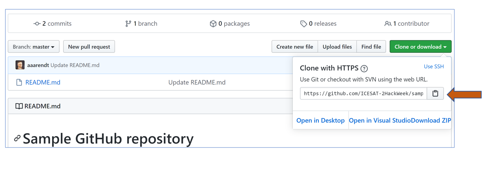
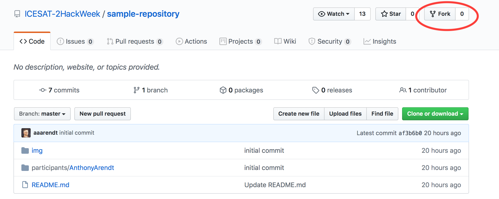
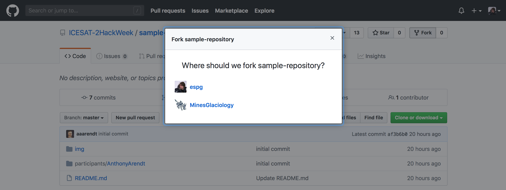
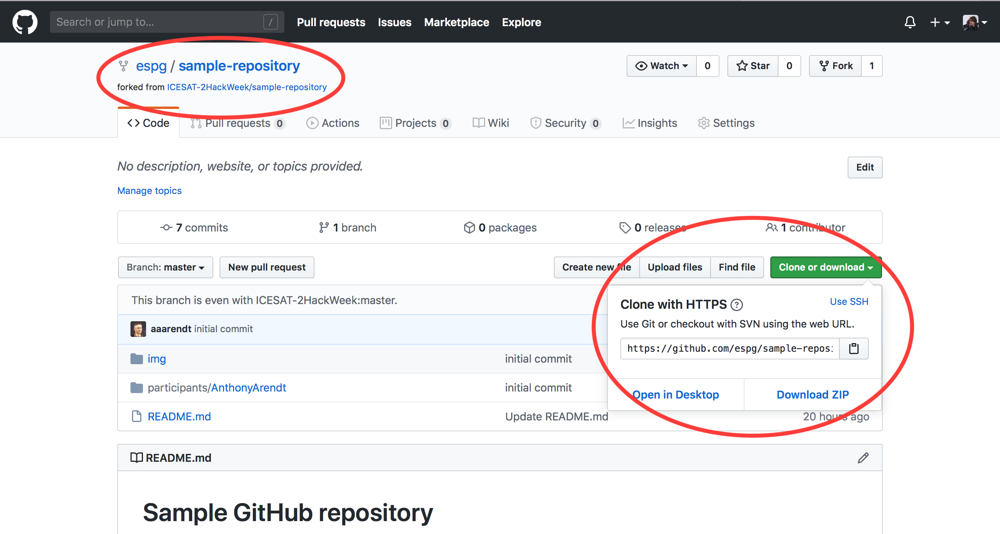
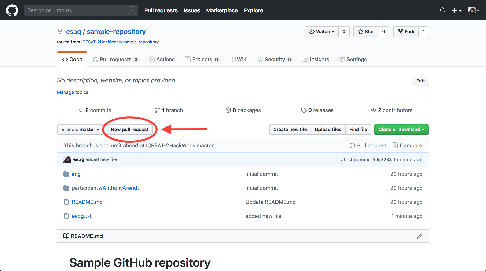
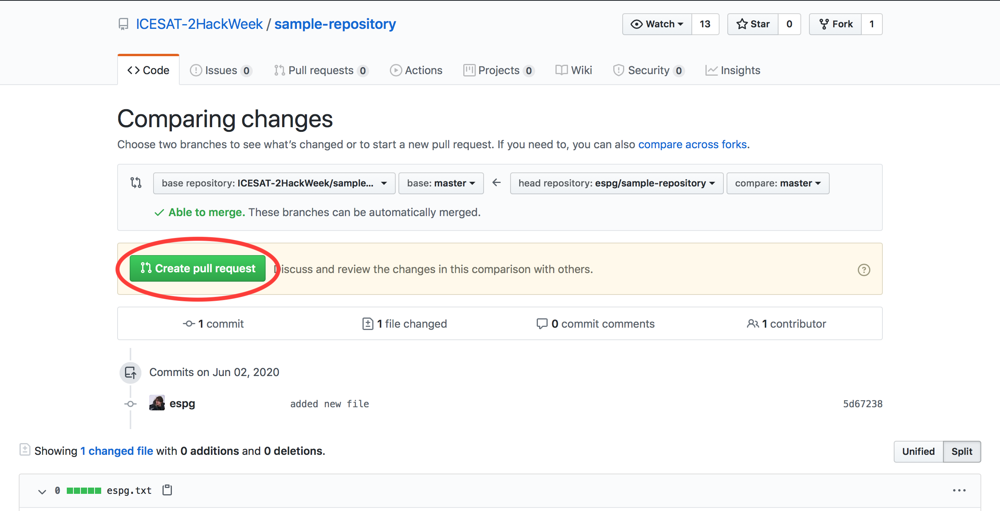
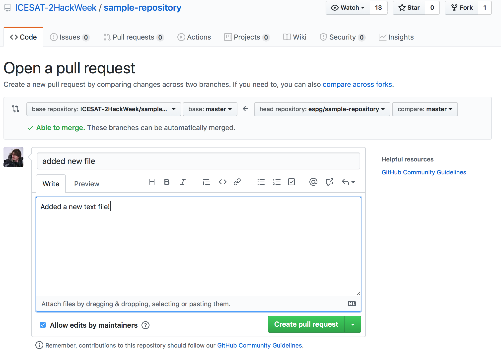
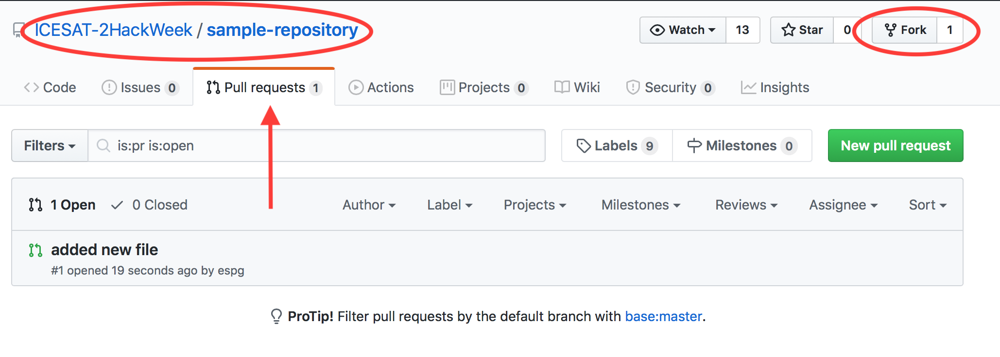
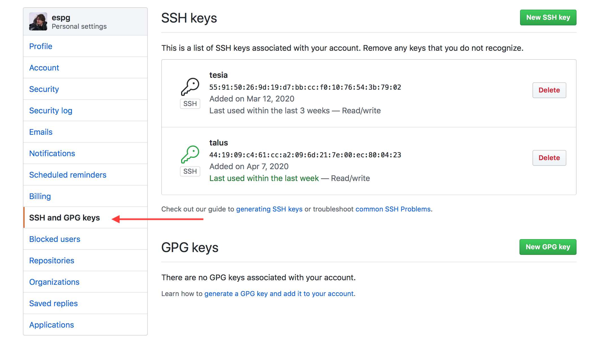
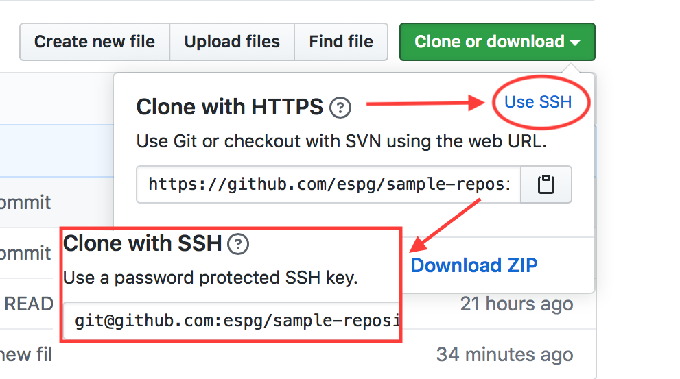

GitHub collaboration exercise¶
In this exercise we will use GitHub to experiment with collaborative workflows.
Until now, you have been tracking your own work using Git version control commands. But what if you would like to share these changes within a team, similar to what we will be doing during our hacking sessions? For this, it makes sense for us to have a copy of the repository on a centralized hub, rather than storing it on someone’s laptop. There are several different flavors of such “hubs”, but for our purposes we will use GitHub.
Collaboration scenario¶
Imagine a colleague has created a repository that is now hosted on GitHub. You would like to take this work and make some additions to it. Here is the workflow we will follow:
We’ll create a copy of the repository on our own local laptop. This process is called “cloning”.
We will make some changes to the files
Assuming we have permission to do so, we can then upload these changes back to the GitHub repository (this process is called “pushing”).
Step 1: Cloning¶
For this exercise we’ll be using a sample GitHub tutorial repository. Navigate to this repository and have a look around. We’ll imagine this is a colleague’s working repository to which we’d like to add some changes.
Clone this repository to your local directory. Start by copying the URL for this Git repository to your clipboard:

Next, clone this repository to your local directory. Type “git clone” and then paste in the URL:
%%bash
git clone https://github.com/ICESAT-2HackWeek/sample-repository.git
Step 2: Make some changes!¶
Now, make some changes! In order for us all to avoid merge conflicts, let’s create a new folder in the “participants” folder. Give the folder a unique name, for example your first name and last name.
NOTE: replace the text in the code block here with your actual name:
%%bash
cd sample-repository/participants
mkdir myfirstname-mylastname
Next, make a new file in the folder you just created:
%%bash
cd sample-repository/participants/myfirstname-mylastname
touch "sample-file.txt"
Finally, choose whatever method you’d like to add some arbitrary text to that file.
Step 3: add/commit¶
After you save changes, we’ll follow our usual steps within any Git workflow: we’ll add and commit the changes we’ve just made:
%%bash
git add sample-repository/participants/myfirstname-mylastname/sample-file.txt
%%bash
git commit -m "initial commit"
Step 4: upload your changes to GitHub¶
To ‘push’ our changes, we have to determine where our changes will be pushed to. When we cloned the repo above, we automatically set the source of the clone as the ‘upstream remote’. You can see the specific details in the file .git/config:
!cat .git/config
Assuming you have write permissions to the repo [remote "origin"], pushing is accomplished with:
%%bash
git push
The above command will generally not complete when run in the iPython notebook, because running git push will prompt for your git username and password, which the jupyter notebook can’t pass thru… but you can run it on a console, and enter your info from the prompt.
Advanced Options¶
The above is the basic workflow for collaborating with people where you already have commit privileges; however, this is rarely the case outside of repositories that you haven’t created. Below, we’ll go over a few common, but more advanced workflows for using git.
Contributing to a repo via pull request¶
If you don’t have write permission for a repo, you can still suggest changes. This often how community software progresses; you may find a bug which is simple to fix in a popular package, and want to fix it for everyone. The process for doing this is similar to the basic workflow, but starts with forking the repo before you clone. Forking copies the repo for you in github, and makes you the owner, so that you can push changes.

If you are associated with any organizations, you’ll have to select where to fork to (personal or organizational)

Once you’ve forked the repo, you can clone as before–only you’ll be cloning your fork:

Generally, it’s best practice to create a new branch for the feature you’re adding of the bug that you are fixing. This is so that you can work on multiple seperate features if you’d like. Say for example, you’re working on a new algorithm that will take several months to finish…but have a smaller change you want to make (and push) in the meantime. For now, we’ll just branch to our github user name–note that we git pull before git pushing, to make sure we’re on the most recent version of the repo.
git branch espg
git checkout espg
touch espg.txt
git add espg.txt
git commit -m "changed files"
git pull
git push
Make our changes, and push as before (again, we need to do this in console because of the username and password prompt). Once we do this, we can select the New Pull Request option in the github web interface, which allows you to enter text and images via markdown, as well as for the repo owners to comment on your work and request changes if they need:

You can choose which branch to submit the PR to and from

Mark down interface

This PR workflow is actually pretty common, since it puts a review step in place–it’s how the tutorials you’re using were put together by the instructors. Once the repo owners who have read/write access decide, your code is merged. Until then, you can see your pull request listed on their repo, and other people can comment and view your work.

This can actually recurse a bit too; if you’re working on something that other people like, they can send you a pull request merge their code into your pull request. Yes, pull requests can have there own pull requests too!
Making commits less painful with ssh¶
As you may have noticed, pushing can be a bit of a hassle with passwords. Git allows you to use ssh-keys instead, so that you don’t have to input your username or password when you push. Generating ssh-keys is a bit outside the scope of this tutorial, but github has a good tutorial for what to do. What we can show quickly is how ssh-keys work in practice once you have them install on your system. Note that ssh-keys come as pair, with both a private key and a public key. The private key stays on your computer, but the public key get uploaded to github; this is done per computer, so here for example are my public keys (under the ‘settings’ github profile option):

There’s one for both my laptop, and my work machine, so I can push from either. (Actually, multiple machines can use the same ssh-key, so ‘talus’ is on both of my personal machines). To tell git to use ssh, we just modify .git/config from:
[remote "origin"]
url = https://github.com/espg/sample-repository.git
fetch = +refs/heads/*:refs/remotes/origin/*
To:
[remote "origin"]
url = git@github.com:espg/intro-git.git
fetch = +refs/heads/*:refs/remotes/origin/*
The new remote line tells git to use ssh. If you already have your ssh keys setup, you can avoid modifying .git/config by just choosing the ssh option when you clone, and git will know to set the remote appropriately:
